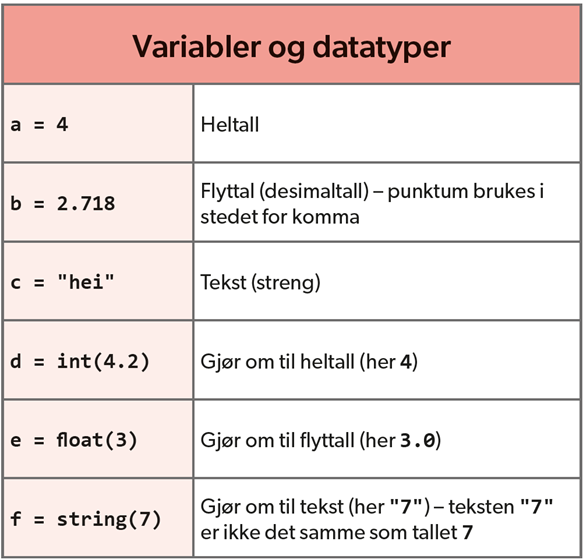

Hovedside
Å komme i gang: Tall, variabler, input og lister
Variabler
Det finnes heltall (Z: integer), desimaltall (R: float) og tekst (string).

I oversikt ovenfor blir det definert forskjellige variabler: a, b, .... , f. Eksempel: variabel a = (er lik) 4.
Output og input
Vi trenger å hente inn data (input: definere variabler eller spør bruker å legge inn data) og vi bør skrive ut data (output i konsol).

Output stemmer ikke helti oversikt ovenfor, skal bli: Hei!.
Lister (arrays)
Lister er et samling av flere ting i en og samme variabel. Ettersom lister og løkker henger tett sammen i Python, bør du
huske dette med lister seinere på websiden.
For å bruke lister i Thonny, importer pylab biblioteket. Deretter blir første linje i programmet: from pylab import *.
Mer info om dette finner du i en lite video (i engelsk).
Feilsøking
Som skrevet før, programmering handler om å lære å mislykkes, programmering er ikke lett (prøv, test, får feilmeldinger, prøv på nytt ->
læringsprosess!). Strukturert feilsøking er viktig her.
- Les feilmeldingene nøye, spesiellt henvisning til den aktuelle linje (eller linje før!) og type feil
- Mye kode, mye testing (skriv ut variabler til å teste om alt virker som du ønsker deg)
- #kommenter, kommenter og kommenter, blir kode mye mer oversiktlig
- Samarbeid, en blir like blind på sitt eget program. Les høyt for noenandre hva programmet ditt gjør, linje for linje. Eller snak
høyt, for eksempel til en kosedyr
- Finn dokumentasjon på nettet, helst i engels., for eksempel www.stackoverflow.com eller www.w3schools.com.
- Gå og finn noe annet (for eksempel fysisk aktivitet), og gå videre seinere
Tilbake til kurs for lærere